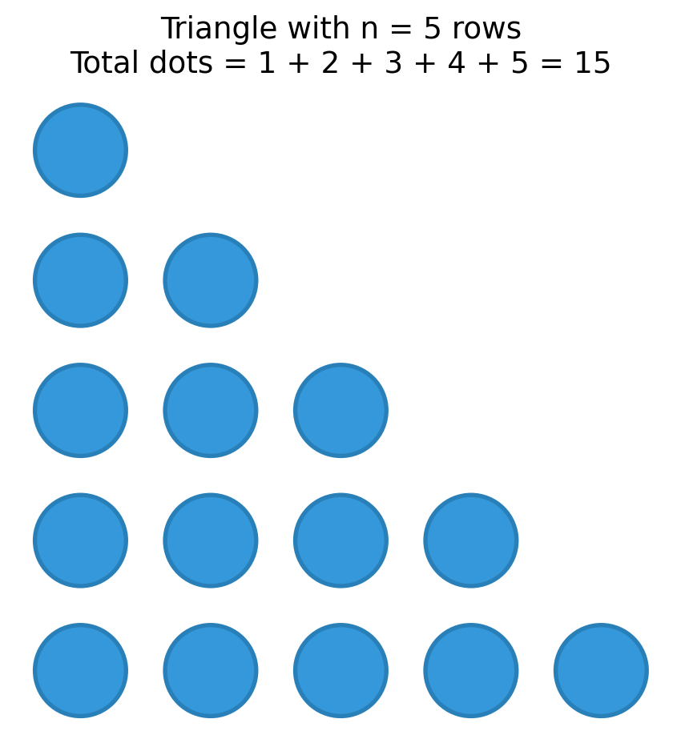
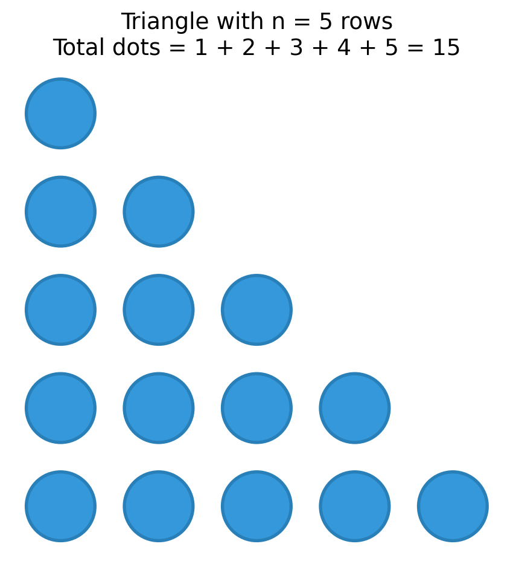
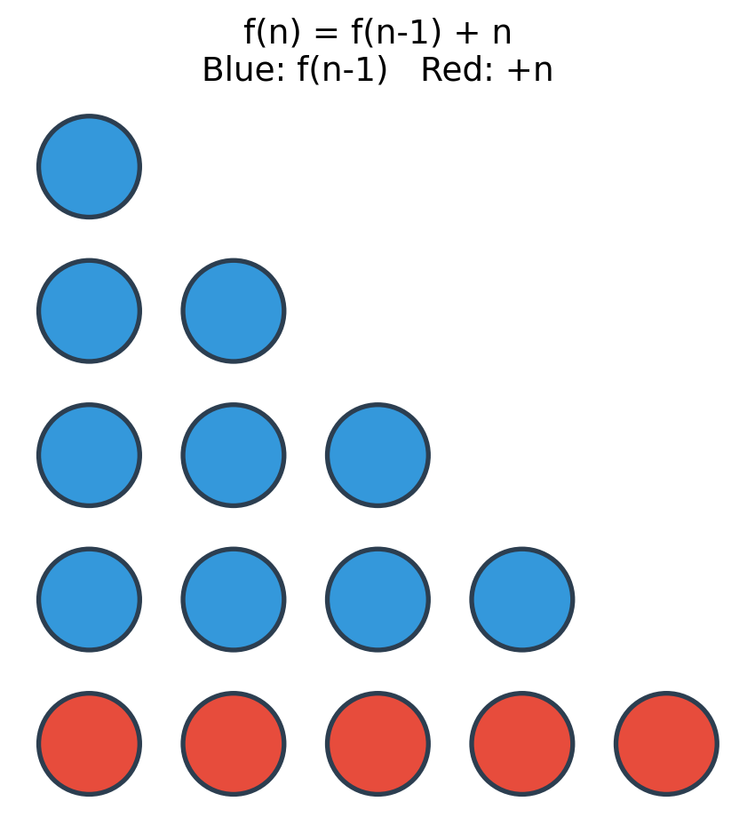

Week 3, Wednesday
January 22, 2026
96 moments of zen 🎵 95 grateful neurons 🎵 94 clever insights 🎵 93 aha moments 🎵 92 merge conflicts 🎵 91 Stack Overflow tabs 🎵 90 refactored functions 🎵 89 git commits 🎵 88 test cases 🎵 87 rubber ducks 🎵 86 coffee refills 🎵 85 keyboard clicks 🎵 84 documentation pages 🎵 83 variable names 🎵 82 edge cases 🎵 81 print statements 🎵 80 whiteboard markers 🎵 79 Piazza posts 🎵 78 recursive calls 🎵 77 helper functions 🎵 76 code reviews 🎵 75 unit tests 🎵 74 bug fixes 🎵 73 loop iterations 🎵 72 hash collisions 🎵 71 array indices 🎵 70 base cases 🎵 69 pointer errors 🎵 68 syntax errors 🎵 67 runtime exceptions 🎵 66 stack frames 🎵 65 heap allocations 🎵 64 binary digits 🎵 63 terminal commands 🎵 62 Slack messages 🎵 61 Discord pings 🎵 60 Zoom breakouts 🎵 59 office hours 🎵 58 study sessions 🎵 57 flashcards 🎵 56 practice problems 🎵 55 lecture notes 🎵 54 code snippets 🎵 53 TODO comments 🎵 52 FIXME tags 🎵 51 deprecation warnings 🎵 50 linter errors 🎵 49 type hints 🎵 48 docstrings 🎵 47 assert statements 🎵 46 boundary checks 🎵 45 null pointers 🎵 44 empty lists 🎵 43 off-by-ones 🎵 42 infinite loops 🎵 41 segfaults 🎵 40 memory leaks 🎵 39 cache misses 🎵 38 race conditions 🎵 37 deadlocks 🎵 36 timeouts 🎵 35 snack breaks 🎵 34 memes shared 🎵 33 playlists made 🎵 32 naps attempted 🎵 31 alarms snoozed 🎵 30 tabs still open 🎵 29 unread emails 🎵 28 doodles drawn 🎵 27 songs on repeat 🎵 26 empty notebooks 🎵 25 highlighters 🎵 24 sticky notes 🎵 23 “almost dones” 🎵 22 existential crises 🎵 21 snacks consumed 🎵 20 walks taken 🎵 19 deep breaths 🎵 18 pokemons 🎵 17 demos 🎵 16 pull requests 🎵 15 code comments 🎵 14 merge commits 🎵 13 Piazza posts 🎵 12 cups of ramen 🎵 11 syntax errors 🎵 10 ChatGPT tabs 🎵 9 hours of sleep 🎵 8 TA office hours 🎵 7 Pomodoros 🎵 6 study rooms 🎵 5 passing tests 🎵 4 stretch breaks 🎵 3 docs read 🎵 2 good friends 🎵 And a latte from Loafe.
How many treats will you receive on the 96th day (Apr 10)?
\[1 + 2 + 3 + \ldots + 96 = \sum_{k=1}^{96} k = \text{ ?}\]
Claim: \(f(n) = \frac{n(n+1)}{2}\) where \(f(n) = \sum_{k=1}^{n} k\)
Proof: Consider an arbitrary \(n >= 0\). Then we have the following cases:
Case 1, \(n = 0\) (base case): \(f(0) = 0 = \frac{0 \cdot 1}{2}\) ✓
Case 2, \(n>0\) (inductive case):
Assume for any \(0 < j < n\), \(f(j) = \frac{j(j+1)}{2}\) (Inductive Hypothesis)
\(f(n) = f(n-1) + n\) by definition.
\(f(n-1) = \frac{(n-1)(n)}{2}\) by IH, since \(n-1 < n\).
\(f(n) = \frac{(n-1)(n)}{2} + n = \frac{(n)(n+1)}{2}\) by algebra. ✓

A recursive mathematical function:
\[f(n) = \begin{cases} 0 & \text{if } n = 0 \\ f(n-1) + n & \text{if } n > 0 \end{cases}\]
| Induction | Math | Recursion |
|---|---|---|
| Consider arbitrary \(n \geq 0\) | \(n\in \mathbb{N}\) | def f(n): |
| Case \(n = 0\): prove directly | \(0\) if \(n=0\) | if n == 0: return 0 |
| Case \(n > 0\): assume \(P(j)\) for \(j < n\) | \(f(n-1)\) defined | Trust f(n-1) works |
| Prove \(P(n)\) using IH | \(f(n-1)+n\) if \(n>0\) | Compute f(n) using f(n-1) |
Same structure. Same reasoning.
Consider the math:
\[f(n) = \begin{cases} 0 & \text{if } n = 0 \\ f(n-1) + n & \text{if } n > 0 \end{cases}\]
When you write triangle(n - 1), trust that it works.
This is exactly like relying on the inductive hypothesis in a proof.
Don’t trace through every call. Just ask:
triangle(n-1) magically gives me the right answer, does my code use it correctly?For the recursion to work its magic, your code must satisfy:
Handle all valid inputs: Every input needs a case (base or recursive)
Have a base case: At least one case that returns without recursing
Make progress: Each recursive call must get closer to a base case
What if we split the triangle differently?

\[f(n) = 2 \cdot f(\lfloor n/2 \rfloor) + (n - \lfloor n/2 \rfloor)^2\]
Works for all \(n\).
I forgot to define triangle_fast!
Both compute the same answer.
But the recursive structures are different:
triangle(n): calls triangle(n-1)triangle_fast(n): calls triangle_fast(n//2)Does that matter?
Let’s race them!
triangle(n): \(f(n) = f(n-1) + n\)
triangle_fast(n): \(f(n) = 2 \cdot f(n/2) + (n/2)^2\)
The same problem can have multiple recursive structures.
Different structures lead to different code and different performance.
This is the heart of algorithm design.
The triangle race was a preview: smart decomposition → fast algorithms.